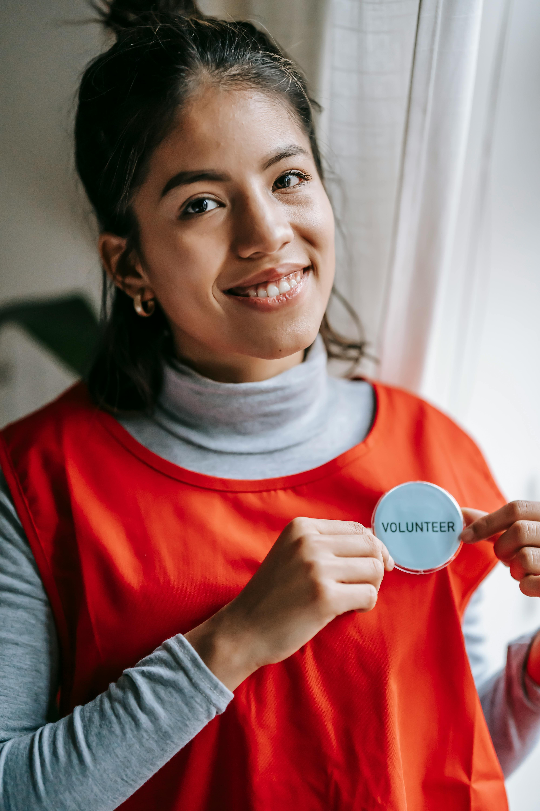

Behind every success story at LES AMIS SOLIDAIRES are the incredible volunteers who dedicate their time, skills, and hearts to serving Canadian communities. Meet some of the extraordinary people who make our mission possible.

Maria Santos, a retired high school teacher from Vancouver, has been volunteering with our immigrant support program for three years. As a former ESL instructor, she brings both professional expertise and personal understanding to her role.
"When I see a newcomer finally feel confident enough to have their first job interview in English, or watch a mother help her child with homework for the first time – that's when I know why I'm here. We're not just teaching language; we're building bridges to new lives."
Maria coordinates our weekend conversation circles, where newcomers practice English in a supportive, informal setting. She's helped over 200 immigrants improve their language skills, with 85% finding employment within six months of completing her program.
David Chen, a software engineer from Gatineau, volunteers every Saturday morning driving cancer patients to their treatment appointments. What started as a one-time favor for a neighbor has become a three-year commitment that has touched dozens of lives.
"David doesn't just drive me to appointments – he listens to my fears, celebrates my progress, and makes me feel less alone in this fight. He's become family."
- Patricia, Breast Cancer SurvivorEvery Thursday evening, a dedicated team of 12 volunteers gathers in Montreal's community kitchen to prepare 400 meals for our weekend food distribution. Led by chef Antoine Dubois and social worker Claire Moreau, this team has become a tight-knit family united by their mission to nourish the homeless community.
Meals Prepared
This YearCooking Sessions
Every ThursdayRegular Volunteers
Core TeamJennifer Kim, a university student studying social work, volunteers with our immigrant family support program, specifically mentoring teenagers who are navigating Canadian high schools while helping their families adapt to a new country.
"These young people are incredible," Jennifer explains. "They're translating for their parents at doctor's appointments, helping with government forms, and still trying to excel in school and make friends. I just try to be the big sister they need – someone who believes in them and helps them see all the possibilities ahead."
Amara, a 16-year-old from Somalia, was struggling with math and feeling isolated at school. Through Jennifer's mentorship, she not only improved her grades but also joined the debate team and is now planning to study engineering. "Jennifer showed me that being different is actually my superpower," Amara says.
What makes our volunteers special isn't just their individual contributions – it's how they've created a community of care that extends far beyond their scheduled volunteer hours. They attend each other's family celebrations, support one another through challenges, and have formed lasting friendships that enrich all their lives.
Join our community of volunteers and discover the joy of service.
Volunteer Today Support Our Volunteers